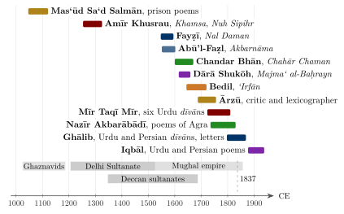

Chapter 12: Persian and Urdu: The Persianate Literatures of India¶
hazāroṉ khvāhisheṉ aisī ki har khvāhish pe dam nikle
bahut nikle mire armān lekin phir bhī kam nikle
Thousands of desires, each one such that I could die for it; many of my longings were fulfilled, and yet too few.
— Ghālib, Urdu dīvān
12.1 Introduction¶
For some eight centuries, from the Ghaznavid conquest of the Punjab in the early eleventh century to the middle of the nineteenth, Persian was one of the great literary languages of the Indian subcontinent. It was the language of government of the Delhi Sultanate, of the regional sultanates of Bengal, Gujarat, Kashmir and the Deccan, and of the Mughal empire and its successor states. Indians of every religion wrote history, letters, biography, Sufi teaching and poetry in it, and in the Mughal period India was one of the principal centres of Persian letters, drawing poets from Iran and Central Asia in search of patronage. Historians now speak of a “Persianate” world stretching from the Balkans to Bengal, in which Persian served as a shared language of learning and administration for speakers of many other tongues; India was among its largest and wealthiest regions (Green 2019; Eaton 2019). Out of this Persian culture, and out of the spoken language of the Delhi region and the Deccan, grew Urdu, whose poetry adopted the forms, metres and imagery of Persian while speaking an Indian language.
This chapter treats these literatures on their own terms, as part of Indian literature rather than as a foreign presence within it. It describes the forms of Persian and Urdu literature; the beginnings at Lahore and Delhi and the work of Amīr Khusrau; the regional courts and the Sufi writing of the fourteenth to sixteenth centuries; the Mughal court and the “fresh style” of its poets; Persian writing by Hindus and Sikhs; translation from Sanskrit and Persian writing about Indian poetics; Arabic writing in India; and then the rise of Urdu in the Deccan, Delhi and Lucknow, the poetry of Ghālib, the prose romance (dāstān) and modern Urdu. Figure 12.1 places the principal authors in time.
Related subjects are treated elsewhere in the series and are only touched on here: Persian lexicography and grammar, and the eighteenth-century debate over the Persian of Indian writers, in Volume 10, Śabda Vidyā; the Mughal translations as a religious and intellectual encounter, and Dārā Shukōh’s comparative theology, in Volume 24, Samanvaya; and Persian writing on music and the music of the Sufi assembly in Volume 9, Saṅgīta–Nāṭya. Within this volume, the Sufi poets of the regional languages appear in Chapter 9 and the Avadhi Sufi romances in Chapter 11. Annemarie Schimmel’s two fascicles in Jan Gonda’s History of Indian Literature remain standard surveys (Schimmel 1973, 1975), and Muzaffar Alam’s essay on the culture and politics of Persian is an excellent short introduction to its place in Indian society (Alam 2003). Persian and Urdu words are given in a simplified transliteration that keeps the familiar Indo-Persian and Urdu forms (dīvān, masnavī, Ḥusain) and marks long vowels, the emphatic consonants and the letters ʿayn (ʿ) and hamza (ʾ).

12.2 The Forms of Persian and Urdu Literature¶
Persian poetry is quantitative and rhymed. Its metres (baḥr), described in the science of prosody (ʿarūẓ) that Persian inherited from Arabic, are fixed patterns of long and short syllables; a poem keeps a single metre throughout, and most forms are defined by their rhyme scheme rather than by their length or subject. Urdu adopted this system entire, fitting the syllables of Indian words to Persian patterns. The principal forms, which are also the forms of Urdu, are set out in Table 12.1.
| Form | Structure | Typical uses |
|---|---|---|
| ghazal | Usually five to twelve couplets, each complete in itself; one rhyme and refrain throughout; pen-name in the last couplet | Love, human or divine; the central lyric form |
| qaṣīda | Long monorhyme poem, often of fifty couplets or more, whose opening section leads into the main theme | Praise of rulers, patrons and saints; satire; the poet’s self-praise |
| masnavī | Rhyming couplets (aa bb cc …), of any length | Romance, history, mystical teaching |
| rubāʿī | Quatrain rhyming aaba or aaaa, in its own metres | Epigram, philosophy, mystical reflection |
| qiṭʿa | “Fragment”: a monorhyme poem without a rhyming opening couplet | Occasional verse, requests, chronograms |
| marsiya | Elegy; in Urdu usually in six-line stanzas | Lament for Ḥusain and the martyrs of Karbala |
| shahr-āshob | “Disturber of the city”: a poem on a city | At first the beauties of a city’s trades; later the ruin of a city |
| tazkira (prose) | Biographical dictionary of poets with selections | Literary history and criticism |
| inshāʾ (prose) | Ornate letters and documents; model collections | Training of secretaries; the art of prose |
| dāstān (prose) | Long romance told in episodes by professional storytellers | Adventure, war, magic and trickery |
The ghazal is the heart of the tradition. Each couplet (sheʿr) is grammatically and thematically complete in itself. All couplets share the same metre; both lines of the opening couplet (maṭlaʿ) and the second line of every subsequent couplet end with the same rhyme (qāfiya) followed by an identical refrain (radīf); and the last couplet (maqṭaʿ) usually includes the poet’s pen-name (takhalluṣ). Its themes are love — for a beloved who may be human or divine — longing, wine and the tavern, the rival, the indifferent beloved and the transience of the world, expressed through a shared stock of images: the moth and the candle, the nightingale and the rose, the cypress, the hunter and the prey. Because the images are inherited and each couplet stands alone, the art of the ghazal lies in giving new meaning to what everyone already knows, within a form that allows no room for explanation. The comparison with the Sanskrit muktaka (Section 2.12) is close: in both, a single stanza must create a complete situation, and the connoisseur’s pleasure lies in seeing how a familiar convention has been turned.
Persian and Urdu critics described this art with their own vocabulary. A “theme” (maẓmūn) is a conceit or proposition that a verse develops, such as the idea that the lover’s tears have flooded the world; “theme-creation” (maẓmūn-āfirīnī) is the invention of new themes or the extension of old ones, and “meaning-creation” (maʿnī-āfirīnī) is the packing of several layers of sense into a verse through wordplay, ambiguity and implication. Poets learned the art from a master (ustād), who corrected their verses (iṣlāḥ), and they competed at the poetry assembly (mushāʿira), where poets often composed ghazals in the metre and rhyme of a given “pattern” line (ṭarḥ). Frances Pritchett’s Nets of Awareness explains this classical poetics and its fate under colonial criticism (Pritchett 1994).
12.2.1 Two Couplets¶
Two well-known Urdu couplets show how the form works. The first is by Mīr:
Mīr Taqī Mīr
pattā pattā būṭā būṭā ḥāl hamārā jāne hai
jāne na jāne gul hī na jāne bāgh to sārā jāne hai
Every leaf, every bush knows my state; whether she knows or not — only the rose does not know; the whole garden knows.
The refrain “knows” (jāne hai) is repeated until it becomes the subject of the verse. The lover’s suffering is so public that the whole garden, down to each leaf, is aware of it; the one exception is the rose, the conventional image of the beloved, the only one whose knowledge matters. The phrase jāne na jāne, “whether she knows or not”, opens the second line with a shrug that is also a question: perhaps the rose really does not know, or perhaps she knows and pretends not to, which would be crueller. The verse uses plain, everyday words, the first two of them doubled (pattā pattā, būṭā būṭā, “every leaf, every bush”), and makes the commonplace of the indifferent beloved new by turning it into a matter of who knows what.
The second is the couplet of Ghālib at the head of this chapter. Its refrain nikle, “came out”, carries a different idiom in each line: in the first, dam nikalnā, “for the breath to come out”, means to die, so that each desire is one “to die for”; in the second, armān nikalnā, “for longings to come out”, means for them to be fulfilled. The same verb thus measures desire by death and fulfilment at once, and the closing phir bhī kam nikle, “and yet they came out too few”, leaves it open whether the speaker is complaining of his luck or confessing that no fulfilment could ever be enough. This is what the critics meant by “meaning-creation”: the multiplication of sense within the narrow space of two lines. A reader trained in Sanskrit poetics would recognise something close to what Ānandavardhana called suggestion (dhvani, Section 6.5), although the Persian and Urdu tradition developed its own terms for it independently.
12.3 Beginnings: Lahore and Delhi¶
Persian came to India as the language of the Ghaznavid sultans, Turkish rulers of Afghanistan whose court at Ghazni was a centre of the new Persian poetry. After Maḥmūd of Ghazni’s campaigns in the early eleventh century, Lahore became the capital of the Ghaznavid province of the Punjab and, after the loss of Ghazni in the twelfth century, of the dynasty itself, until the Ghūrids took it in 1186. Two works from this Lahore of the eleventh and twelfth centuries show how early Persian took root. ʿAlī Hujwīrī (d. c. 1072), whose shrine at Lahore, the Dātā Darbār, is still a place of pilgrimage, wrote the Kashf al-Maḥjūb (“Unveiling of the Hidden”), the earliest systematic treatise on Sufism in Persian. Masʿūd Saʿd Salmān (c. 1046–1121), born in Lahore to a family of Ghaznavid officials, was imprisoned for nearly two decades in mountain fortresses after falling out of favour, and his prison poems (ḥabsiyyāt), which describe his cell, his failing body and his longing for Lahore, are among the most personal poems in classical Persian (Sharma 2000). Amīr Khusrau later reported that Masʿūd had left collections of verse in Arabic, Persian and Hindavi; nothing of the Hindavi survives.
With the foundation of the Delhi Sultanate in the early thirteenth century, and the flight of scholars and poets from Khurasan and Transoxiana before the Mongol invasions, Delhi became a Persian literary capital. Sadīd al-Dīn Muḥammad ʿAwfī, a refugee from Bukhara, compiled at Uch in Sindh the Lubāb al-Albāb (c. 1221), the oldest surviving biographical anthology of Persian poets, and later, at Delhi, the Jawāmiʿ al-Ḥikāyāt, a vast collection of anecdotes and stories. Minhāj-i Sirāj Jūzjānī’s Ṭabaqāt-i Nāṣirī (1259–60) was among the first of the long line of Persian histories written in India. Multan, on the route from Iran, was another centre: the poet Fakhr al-Dīn ʿIrāqī (d. 1289) of Hamadan spent some twenty-five years there as a disciple of the Suhrawardī master Bahāʾ al-Dīn Zakariyyā, whose daughter he married, and some of his most celebrated mystical ghazals are said to have been composed in Multan before he left for Anatolia. These works established the genres — the court poem, the anthology, the story collection, the history — that Indian Persian literature would cultivate for six centuries.
12.4 Amīr Khusrau¶
Amīr Khusrau (1253–1325) is the most celebrated poet of Indian Persian, and the first to make India itself a central subject of Persian poetry. He was born at Patiali in the Gangetic plain to a Turkish father, an officer of the sultans, and an Indian mother, and spent his life in the service of the sultans of Delhi, from the Mamlūks through the Khaljīs to the first Tughluq, surviving the violent changes of dynasty that ended many careers. He was also the devoted disciple of the Chishtī Sufi master Niẓām al-Dīn Awliyāʾ (d. 1325), and he was buried near his master’s tomb in Delhi, where the two shrines still stand side by side. Sunil Sharma’s short study is the best introduction to his life and work (Sharma 2005).
His output was immense, and he arranged much of it himself. His lyric and occasional poetry was collected in five dīvāns, assembled at different stages of his life, of which the third, Ghurrat al-Kamāl (“The Prime of Perfection”, 1290s), carries a long prose preface in which he reflects on the art of poetry, sets out his view of the poet’s craft and his own place among the poets of Persian, and defends the Persian of India as no less correct than that of the Persian homelands. Between 1298 and 1302 he composed a Khamsa (“Quintet”) of five long masnavīs in answer to the celebrated quintet of the twelfth-century poet Niẓāmī of Ganja: the didactic Maṭlaʿ al-Anwār, the romances Shīrīn u Khusrau, Majnūn u Laylā and Hasht Bihisht (“Eight Paradises”), and the Alexander poem Āʾīna-yi Sikandarī. Such “answers” (javāb) to a great predecessor, in the same metre and on the same stories, were a recognised way of claiming a place in the tradition, and Khusrau’s quintet was itself answered by later poets in Iran and India.
Khusrau also wrote what no Persian poet before him had attempted on such a scale: masnavīs on contemporary events at the Delhi court. The Qirān al-Saʿdayn (“The Conjunction of the Two Auspicious Stars”, 1289) describes the meeting of the young sultan Kayqubād and his father; the Miftāḥ al-Futūḥ (1291) celebrates the campaigns of Jalāl al-Dīn Khaljī; the Duvalrānī Khiẓr Khān (c. 1316) tells the love of ʿAlāʾ al-Dīn Khaljī’s son Khiẓr Khān for the Gujarat princess Devaldevī, and their tragic end; the Nuh Sipihr (“Nine Heavens”, 1318) praises the sultan Quṭb al-Dīn Mubārak Shāh; and the Tughluqnāma narrates the rise of Ghiyāth al-Dīn Tughluq. These poems are panegyrics, but they are also full of the life of Delhi, its buildings, festivals and armies. His prose Khazāʾin al-Futūḥ (1311), on the conquests of ʿAlāʾ al-Dīn, and his manual of letter-writing, the Iʿjāz-i Khusravī, show the same virtuosity in ornate prose.
The third “heaven” of the Nuh Sipihr is a famous praise of India. Khusrau argues that India is superior to Khurasan and other lands in its climate, its flowers and fruits, the learning of its brahmins, and its languages, and he lists the languages spoken across the country, from Sindhi and Lahori to Bengali, Telugu and the speech of the Tamil coast, distinguishing them from Sanskrit, the learned language of the brahmins. Elsewhere he calls himself a “Turk of Hindustan” and the “parrot of India” (ṭūṭī-yi Hind). These passages are poetic arguments, not ethnography, but they show a Persian poet claiming India as his homeland and its diversity as a source of pride; later Persian histories and geographies of India often opened with a similar praise of the land (see Volume 21, Bhūgola).
Khusrau’s reputation in later centuries spread far beyond his written Persian works. Riddles, rhymed word-lists (the Khāliq Bārī), Hindavi songs and qawwālī texts are attributed to him, and he is remembered as the founder of Hindustani music and of the Urdu language. Most of the Hindavi material survives only in sources written centuries after his death, and its attribution cannot be confirmed; the inventions of musical instruments credited to him in modern popular accounts have no support in the sources of his time (see Volume 9, Saṅgīta–Nāṭya). What is secure is his Persian work, and his role as a poet who joined court, Sufi lodge and Indian locality.
His friend Ḥasan Sijzī of Delhi (d. c. 1336), known as Ḥasan Dihlavī, was admired as a ghazal poet, but his most influential work is in prose. In the Fawāʾid al-Fuʾād (“Morals for the Heart”) he recorded the conversations of Niẓām al-Dīn Awliyāʾ at meetings between 1307 and 1322, with dates and settings, as the master answered questions, told stories and commented on the conduct of disciples. It created in India the genre of the malfūẓ (“utterances”), the recorded discourses of a Sufi master, which was imitated in every Sufi order and is among the most vivid evidence for religious life in medieval India.
12.5 Regional Courts and Sufi Letters¶
From the fourteenth century the Delhi Sultanate fragmented into regional kingdoms, and Persian literature followed the courts. At Delhi itself Ẓiyāʾ al-Dīn Baranī completed his Tārīkh-i Fīrūz Shāhī (1357), a history of the sultans that is also a meditation on kingship and its failures. At Badaun, Ẓiyāʾ al-Dīn Nakhshabī made the Ṭūṭīnāma (“Parrot Book”, c. 1330), a Persian version of the Sanskrit Śukasaptati (Section 4.5.6), which became one of the most widely read story collections of the Persian world. In Bihar, the Firdawsī Sufi Sharaf al-Dīn Aḥmad Manerī (d. 1381) wrote the Maktūbāt-i Ṣadī (“Hundred Letters”), letters of spiritual instruction to a disciple that made the Sufi letter a literary form in India.
In the Deccan, the Bahmanī sultanate (1347–1527) drew poets, merchants and scholars from Iran and the Gulf. At its foundation ʿIṣāmī completed the Futūḥ al-Salāṭīn (1349–50), a verse history of the Muslim rulers of India in the metre and manner of Firdawsī’s Shāhnāma, dedicated to the first Bahmanī sultan; it is one of several Indian attempts to write the history of the subcontinent as Persian epic. The sultanate’s great minister Maḥmūd Gāwān (1411–1481), a native of Gīlān, wrote the Riyāẓ al-Inshāʾ, a collection of letters to rulers and scholars across the Islamic world that became a model of Persian epistolary prose; he was executed in 1481 after a court intrigue. In Bengal the sultans corresponded with poets in Iran, and a ghazal of Ḥāfiẓ of Shiraz (no. 225 in the Qazvīnī–Ghanī edition) speaks of the “parrots of India” cracking sugar from the “Persian candy” that is going to Bengal — lines that later tradition connects with an invitation from the sultan Ghiyāth al-Dīn Aʿẓam Shāh. In Kashmir, Sultan Zayn al-ʿĀbidīn (r. c. 1420–1470) made his court a meeting-place of Persian and Sanskrit learning: Persian versions of Sanskrit works, including the Mahābhārata and Kalhaṇa’s Rājataraṅgiṇī, are reported to have been made there, and the Sanskrit chronicler Śrīvara, who continued Kalhaṇa’s history (Section 2.9), later rendered the Persian poet Jāmī’s romance of Yūsuf and Zulaykhā into Sanskrit as the Kathākautuka. Translation, in other words, ran in both directions.
The same centuries saw the first great Sufi romances in Hindavi, beginning with Mullā Dāʾūd’s Cāndāyan (1379), written in Avadhi in the Persian script by poets trained in Persian. They joined Persian Sufi ideas of love to Indian poetics and landscapes, and are discussed with Jāyasī’s Padmāvat in Section 11.3.
12.6 Sufi Poetry and the Assembly¶
Persian poetry in India was sung as much as it was read, above all in the Sufi assembly for “listening” (samāʿ). In the Chishtī lodges of Delhi and the provinces, professional singers (qawwāl) performed ghazals of Saʿdī, ʿIrāqī, Khusrau and other poets, and the recorded conversations of the masters describe disciples overcome by a single verse and masters explaining how a couplet should be understood. Whether listening to poetry with music was lawful was debated among jurists and Sufis for centuries, and the Chishtīs were its chief defenders. The music of the assembly is described in Volume 9, Saṅgīta–Nāṭya; for literature its importance is that it gave the ghazal a ritual setting in which the beloved, the wine and the tavern were heard as figures of God, of ecstasy and of the path. Later readers extended this mystical reading to the whole lyric tradition, sometimes more readily than the poems warrant, since many ghazals were written for the court and the salon as well as for the lodge.
Sufi masters also wrote. Sayyid Muḥammad Ḥusainī “Gīsū Darāz” (1321–1422), a Chishtī master who left Delhi and settled at Gulbarga in the Deccan under the patronage of the Bahmanī sultan, wrote many works in Persian and Arabic, including poetry; the Dakhni prose treatise Miʿrāj al-ʿĀshiqīn long attributed to him is probably later. Jamālī Kambōh (d. 1536), poet of the Lodī and early Mughal courts and a Suhrawardī Sufi who travelled widely in the Islamic world, wrote the Siyar al-ʿĀrifīn, lives of the Sufis of India, and a romance in verse; his tomb and mosque survive at Mehrauli. In the circle of Dārā Shukōh and his sister Jahānārā, their Qādirī master Mullā Shāh Badakhshī (d. 1661) wrote quatrains on the unity of being. The most famous of these mystical poets is Sarmad (d. 1661), a merchant from Kashan, of Jewish birth according to most accounts, who came to India, abandoned trade and clothing to live as a naked holy man in Delhi, and wrote Persian quatrains (rubāʿī) mocking outward religion and proclaiming the presence of God in all things. Associated with Dārā, he was executed after Aurangzeb’s accession; his tomb beside the Jāmiʿ Masjid in Delhi is still visited.
12.7 The Mughal Court and the “Fresh Style”¶
The Mughal dynasty began with a memoir. Bābur (1483–1530), the founder, wrote his Bāburnāma in his native Chaghatai Turkish; its frankness about his defeats, his drinking and his feelings, and its close description of the plants, animals and people of Hindustan, make it one of the great autobiographies of any literature. Under his grandson Akbar it was translated into Persian (1589) by the general ʿAbd al-Raḥīm Khān-i Khānān, himself a poet in Persian, Braj and Avadhi (“Rahīm”, Chapter 11). Bābur’s daughter Gulbadan Begam wrote, at Akbar’s request, a memoir of her brother Humāyūn’s reign, the Aḥvāl-i Humāyūn Bādshāh, in a plain Persian unusual for the period; it is one of the few prose works by a Mughal woman to survive.
Under Akbar (r. 1556–1605) the court became one of the great centres of Persian poetry, by many accounts the richest of its time. The emperor appointed a poet laureate (malik al-shuʿarāʾ): first Ghazālī Mashhadī (d. 1572), then Abū’l-Fayẓ “Fayẓī” (1547–1595), elder brother of Akbar’s minister and historian Abū’l-Faẓl. Fayẓī planned a quintet in answer to Niẓāmī and completed at least the Nal Daman (1594–95), a masnavī on the Indian story of Nala and Damayantī (Section 12.11). Poets came from Safavid Iran, where royal patronage had turned towards religious verse: ʿUrfī of Shiraz (1555–1591), whose proud and difficult qaṣīdas made him famous across the Persian world before his early death at Lahore, and Naẓīrī of Nishapur (d. c. 1612), whose ghazals were much imitated, found patrons among the Mughal nobility, ʿUrfī first with Fayẓī and both later with ʿAbd al-Raḥīm. The Maʾāṣir-i Raḥīmī (1616), a history of ʿAbd al-Raḥīm’s life and household, includes notices of the scores of poets, scholars and artists he supported.
Jahāngīr (r. 1605–1627) and Shāh Jahān (r. 1628–1658) continued the institution of the laureate — Ṭālib Āmulī under Jahāngīr, Abū Ṭālib Kalīm of Kashan and Qudsī of Mashhad under Shāh Jahān — and court poets celebrated the emperors’ buildings, gardens and campaigns. Kashmir, which the Mughals made their summer retreat, inspired a whole literature of praise; Sunil Sharma has shown how court poets turned the landscapes of the empire, Kashmir above all, into a Persian “Arcadia” of gardens, springs and seasons (Sharma 2017). The Iranian poet Ṣāʾib of Tabriz spent some six years in India in the 1620s and early 1630s before returning to Isfahan, and his work belongs as much to India as to Iran; Ghanī of Kashmir (d. 1669), who wrote in Persian, was admired by both.
12.7.1 Tāza-gūʾī and the “Indian Style”¶
Persian poets of the sixteenth and seventeenth centuries, in India, Iran and Central Asia alike, prized “speaking the fresh” (tāza-gūʾī): the search for new themes, unexpected images and “strange meanings” (maʿnī-yi bīgāna) within the inherited conventions of the ghazal. Poets built elaborate conceits on abstract ideas, linked images through hidden logical connections (khayāl-bandī, “binding of images”), and answered one another’s verses in deliberate competition. Twentieth-century Iranian literary historians called this manner the “Indian style” (sabk-i hindī), and many of them judged it obscure and decadent; in eighteenth-century Iran a “literary return” (bāzgasht-i adabī) had already rejected it in favour of older models. Recent scholarship has revised this verdict. Paul Losensky has shown how poets used imitation and response to assert individuality (Losensky 1998); Shamsur Rahman Faruqi has argued that the style was a sophisticated poetics of meaning, and that the label “Indian” misdescribes a style shared across the Persian world (Faruqi 2004); and Rajeev Kinra has shown that the poets themselves understood “freshness” as a deliberate programme of literary innovation (Kinra 2015).
12.7.2 Bedil¶
The greatest and most difficult poet of this tradition was Mīrzā ʿAbd al-Qādir Bedil (1644–1720), born at Patna of a family of Central Asian origin, who spent most of his life in Delhi. He held a minor military post, left it, and lived independently as a poet and Sufi teacher, surrounded by disciples who included Hindus as well as Muslims. His enormous body of work includes ghazals, rubāʿīs, philosophical masnavīs — among them the ʿIrfān (“Gnosis”, completed 1712) — and the Chahār ʿUnṣur (“Four Elements”), a work of mixed prose and verse that is part autobiography and part treatise on the unity of being. His poetry turns on paradox: the mirror that reveals nothing but its own surface, the bubble that is both separate from and identical with the sea, the self that is at once real and an illusion. Bedil was little regarded in twentieth-century Iran, but in Afghanistan, Tajikistan and Uzbekistan he became, and remains, a classic, read in circles devoted to his poetry; in India, Ghālib took him as his model in his early Urdu verse.
12.7.3 Women and Persian Writing¶
Women of the Mughal family wrote and patronised Persian. Besides Gulbadan’s memoir, Shāh Jahān’s daughter Jahānārā (1614–1681) wrote the Muʾnis al-Arwāḥ (“Confidant of Souls”, 1640), a life of the Chishtī saint Muʿīn al-Dīn of Ajmer, and a second work on her own Qādirī master, recording her initiation in the first person. Persian verses are attributed to Nūr Jahān, Jahāngīr’s queen, and a dīvān under the pen-name Makhfī (“the Hidden”) has long been ascribed to Aurangzeb’s daughter Zīb al-Nisāʾ (1638–1702), though scholars doubt that attribution. Women’s writing in Persian is thinly preserved, and its history is still being recovered.
12.8 Persian Prose: History, Memoir and Letters¶
Persian prose in India was as varied as its poetry, and its most admired works were histories. A Persian history was a work of literature as well as a record: its author was expected to open with praise of God and the ruler, to vary narrative with verse, to describe battles and festivals in set pieces of ornamented prose, and to draw moral lessons. Under the Mughals history became a major literary art. Abū’l-Faẓl (1551–1602), Akbar’s minister and Fayẓī’s brother, wrote the Akbarnāma, a history of the dynasty culminating in Akbar’s reign, whose final part, the Āʾīn-i Akbarī, describes the empire’s institutions, revenues and provinces and the learning of its Hindu subjects (on the work as geography see Volume 21, Bhūgola). His elaborate periodic style, rich in metaphor and rhymed phrases, became a model for generations of secretaries, and his letters, collected after his death as the Mukātabāt-i ʿAllāmī, were studied as patterns of inshāʾ.
The court history had its counter-voice. ʿAbd al-Qādir Badāʾūnī (1540–c. 1615), a scholar employed on the translation of the Rāmāyaṇa and other works, secretly wrote the Muntakhab al-Tawārīkh (“Selection of Histories”), which attacks Akbar’s religious policies and mocks Abū’l-Faẓl and Fayẓī, and whose notices of the scholars, Sufis and poets of the age are among the liveliest portraits in Persian; it circulated only after his death. Jahāngīr continued Bābur’s tradition of royal autobiography in a memoir that records his tastes in painting, natural history and the curiosities brought to his court as closely as his campaigns. In the eighteenth century Ghulām Ḥusain Khān Ṭabāṭabāʾī’s Siyar al-Mutaʾakhkhirīn (1781) described the collapse of Mughal authority and the rise of the East India Company in Bengal with a critical eye on both, and Persian-writing travellers to Britain recorded their impressions of Europe (see Volume 24, Samanvaya).
Beside history stood the literature of ethics (akhlāq). Naṣīr al-Dīn Ṭūsī’s thirteenth-century Akhlāq-i Nāṣirī and its successors, which joined Greek ethics to Islamic and Persian ideas of kingship, were read at the Mughal court as guides to just rule. Muzaffar Alam has shown how their ideal of a ruler who maintains a balance among all the groups of society shaped the political vocabulary of the empire, and how Persian, through such texts, became a language of ethics and government shared by Muslims and Hindus (Alam 2004).
12.9 Hindu and Sikh Writers of Persian¶
Persian in India was not the literature of Muslims alone. The Mughal state depended on secretaries (munshī) and accountants, many of them Hindus of the Kāyastha and Khatrī communities, who learned Persian in schools alongside Muslims and made careers in its prose (see Volume 22, Manas and Śikṣā). The art of inshāʾ — the drafting of letters and documents in a prose of balanced clauses, rhymed phrases and apt quotation — was their profession, and collections of model letters were their textbooks.
The outstanding example is Chandar Bhān “Brahman” (d. c. 1670) of Lahore, secretary to successive chief ministers of Shāh Jahān and, for a time, to the emperor himself. His Chahār Chaman (“Four Gardens”) combines an account of court ceremonial and the empire’s administration with autobiography, advice to his sons, and reflections on the ethics of service; he also left a dīvān and a collection of letters. Rajeev Kinra’s study of his career shows that Hindu writers were not marginal imitators but full participants in the literary culture of the empire, and that the values they expressed — civility, self-cultivation, tolerance — were shared across communities (Kinra 2015). The tradition continued after him: Sujān Rāy Bhaṇḍārī, a Khatrī of Batala, wrote the Khulāṣat al-Tawārīkh (1695), a history of India with a remarkable description of its regions; Ānand Rām Mukhliṣ (d. 1751) wrote memoirs and a dictionary of Persian idioms; and Lāla Ṭek Chand Bahār compiled the Bahār-i ʿAjam, a great dictionary of Persian poetic usage (on Indian Persian lexicography see Volume 10, Śabda Vidyā).
At the court of Guru Gobind Singh, Bhāī Nand Lāl “Goyā” (1633–1713) wrote Persian poetry of devotion to the Guru, including a dīvān of ghazals and the masnavī Zindagīnāma. His works are recited in Sikh worship, and they show Persian serving as a language of devotion outside Islam.
Persian also outlived the Mughal court as the written language of power. The Maratha, Rajput and Sikh states kept their correspondence and records in it, and Ranjit Singh’s kingdom of the Punjab used it as its language of government; the East India Company employed Persian secretaries and conducted its diplomacy in Persian into the nineteenth century, and the early Indian-language press included Persian weeklies, among them Rammohun Roy’s Mirʾāt al-Akhbār (Calcutta, 1822). The prestige of Persian also provoked responses. At Śivājī’s command the scholar Raghunātha Paṇḍita compiled the Rājavyavahārakośa, a Sanskrit vocabulary of administration meant to replace the Persian terms current in Marathi, an early instance of linguistic purism. Such efforts did little to dislodge Persian vocabulary, which remains embedded in Marathi, Punjabi, Bengali, Gujarati and Hindi as in Urdu.
12.10 Books, Readers and the Persian Curriculum¶
Persian literary culture rested on a shared curriculum. Pupils who learned Persian in the maktab, Hindu and Muslim alike, and some girls of elite households taught at home, progressed from primers and rhymed vocabularies to the Gulistān (“Rose Garden”, 1258) and Būstān of Saʿdī of Shiraz, whose anecdotes in prose and verse taught ethics, manners and style together, and then to the lyric and narrative classics: Ḥāfiẓ, Niẓāmī, Jāmī and, in India, Khusrau. Saʿdī’s maxims passed into proverbial use in many Indian languages (Chapter 8). The dīvān of Ḥāfiẓ was also an oracle: readers opened it at random and took the first verse on the page as an answer to their question, a practice (fāl) followed at the Mughal court as well as in ordinary households.
Readers copied the verses they liked into personal notebooks (bayāẓ) and larger anthologies (safīna), and many poems, including much early Urdu verse, survive only in such collections. Manuscripts were written in the hanging nastaʿlīq script, and the imperial and noble libraries (kitāb-khāna) employed calligraphers, illuminators, painters and binders, so that a fine manuscript of a Persian classic was at once a literary and an artistic object. Poets also displayed their skill in the chronogram (tārīkh), a verse or phrase whose letters, read as numbers in the abjad system, add up to the year of an event: a building, an accession, a birth or a death. Chronograms were inscribed on Mughal buildings and tombstones, collected in anthologies and admired for their ingenuity, and the practice passed into Urdu.
From the 1830s lithography, which reproduced the hand-written nastaʿlīq far better than movable type, made cheap printed books possible. Presses at Lucknow, Kanpur, Delhi and Bombay printed the Persian and Urdu classics, school texts and new writing in large numbers. The most important, the Naval Kishore Press of Lucknow, founded in 1858 by Munshi Naval Kishore, published thousands of titles in Persian, Urdu, Arabic, Hindi and Sanskrit, and kept the Persian classics in print long after Persian had lost its official role (Stark 2007).
12.11 Translation and the Meeting of Poetics¶
12.11.1 The Mughal Translations¶
Akbar’s court sponsored the most ambitious programme of translation from Sanskrit into Persian ever undertaken. From the 1580s a translation bureau (maktab-khāna) at Fatehpur Sikri brought together Persian scholars and brahmin pandits, who worked in pairs, the pandit explaining the Sanskrit in Hindavi and the Persian writer composing the text. The Mahābhārata was rendered as the Razmnāma (“Book of War”, 1582–86), with a long preface by Abū’l-Faẓl explaining why the emperor wished it known; the Rāmāyaṇa followed, completed in 1589 by the historian ʿAbd al-Qādir Badāʾūnī, who disliked the task and said so in his private chronicle; and there were versions of the Yogavāsiṣṭha, the Harivaṃśa, Bhāskara’s Līlāvatī (by Fayẓī) and other works. Abū’l-Faẓl recast the Persian Pañcatantra in a simpler style as the ʿIyār-i Dānish (“Touchstone of Knowledge”). The imperial copies of the Razmnāma and the Persian Rāmāyaṇa were lavishly illustrated in the court workshop, and further copies were made for the nobility. The religious and political aims of the programme are discussed in Volume 24, Samanvaya.
As literature, these works made the Indian epics part of the Persian library. The Razmnāma is a Persian prose narrative studded with verses, often added by the translators from the Persian classics, which brought the epic into the idiom of Persian historical and ethical writing. Audrey Truschke has shown that the Mughals read the Mahābhārata partly as a history of India’s ancient kings and partly as a mirror of kingship, and that the translations were part of a wider engagement with Sanskrit at the court, where brahmin and Jain scholars, such as the Jain monks Bhānucandra and Siddhicandra, received patronage and wrote Sanskrit works for and about the Mughals (Truschke 2016). Fayẓī’s Nal Daman shows a different kind of translation: a free retelling of the Nala episode of the Mahābhārata as a Persian masnavī in the manner of Niẓāmī, in which an Indian story becomes a Persian romance of love and separation. A generation later, Shāh Jahān’s eldest son Dārā Shukōh (1615–1659) and the scholars of his circle translated fifty Upaniṣads as the Sirr-i Akbar (“The Greatest Secret”, 1657); Dārā himself wrote lives of the saints, Sufi treatises and the comparative Majmaʿ al-Baḥrayn (“The Meeting-Place of the Two Seas”, 1655). Supriya Gandhi’s biography places these works in the politics of the succession war in which he was defeated and executed (Gandhi 2020). Carl Ernst has cautioned that such translations should not be read simply as Muslim “studies of Hinduism”: they served the varied aims of their patrons and translators, from statecraft to Sufi metaphysics (Ernst 2003).
12.11.2 Persian Writing on Indian Poetics¶
Persian writers also studied Indian poetry and its theory. In the Ḥaqāʾiq-i Hindī (“Indian Truths”, 1566), the Sufi Mīr ʿAbd al-Wāḥid Bilgrāmī explained to his fellow Sufis how the images of Hindi Vaiṣṇava song — Kṛṣṇa, Rādhā, the cowherd women, the flute, the river Yamunā, Gokul and Mathurā — could be read as symbols of the Sufi path, so that Hindi songs could be sung in the Sufi assembly without offence. Mīrzā Khān’s Tuḥfat al-Hind (late seventeenth century) taught Persian readers the Braj language together with its prosody, its rhetoric and its classification of heroines (see Volume 10, Śabda Vidyā). In the eighteenth century Ghulām ʿAlī Āzād Bilgrāmī (1704–1786), in the Ghizlān al-Hind (“Gazelles of India”), compared the figures of speech and the types of heroine (nāyikā-bheda) of Indian poetics with those of Arabic and Persian rhetoric, and, in the Arabic work from which it was drawn, the Subḥat al-Marjān, is said to have proposed new figures of speech modelled in part on Indian poetry. At the same time Mughal nobles wrote in the Indian tradition itself: ʿAbd al-Raḥīm’s Avadhi Barvai Nāyikābhed illustrates the classes of heroine in the barvai metre, and, as Allison Busch has shown, the Mughal court and its nobles patronised the Braj poets who continued the tradition of Keśavdās (Busch 2011). Indian poetics, in short, was not sealed off from the Persianate world; the two systems were studied, compared and combined (compare Section 6.11).
12.12 Arabic in India¶
Arabic, the language of the Qurʾān, of law and of theology, was written in India throughout this period, though it never became a language of courtly literature as Persian did. Its Indian authors wrote mainly on the religious sciences, and some of them became famous across the Islamic world: the lexicographer and scholar of ḥadīth Raḍī al-Dīn al-Ṣaghānī (1181–1252), born at Lahore; Shāh Walī Allāh of Delhi (1703–1762), whose Ḥujjat Allāh al-Bāligha is a classic of Islamic thought; and Murtaḍā al-Zabīdī (1732–1791), born at Bilgram, who compiled in Cairo the great Arabic dictionary Tāj al-ʿArūs. Arabic was also the written language of the coastal Muslim communities of Gujarat, the Konkan and Malabar, tied by trade and pilgrimage to Arabia and Yemen, and they produced histories in it, such as Zayn al-Dīn al-Maʿbarī’s account of the Muslims of Malabar and their war with the Portuguese (Section 10.4.4) and a history of the Gujarat sultanate written at the beginning of the seventeenth century. Arabic poetry was rarer, but Āzād Bilgrāmī, the comparer of poetics mentioned above, was celebrated for his Arabic odes in praise of the Prophet. Annemarie Schimmel’s survey treats this literature together with the Persian (Schimmel 1973).
12.13 Persian Models in the Regional Languages¶
Persian forms and stories entered most of the literatures of northern India. The Punjabi and Sindhi qiṣṣas, the Kashmiri masnavīs of Maḥmūd Gāmī and the Persian-derived romances of Odia and Hindi are described in Chapter 11. The most fully studied case is in Bengali. Ālāol (seventeenth century), a Muslim poet at the Buddhist court of Arakan in present-day Myanmar, where Bengali Muslim ministers patronised Bengali poetry, rendered Jāyasī’s Padmāvat as the Padmāvatī and adapted Persian classics, including Niẓāmī’s Haft Paykar and the Alexander romance. Thibaut d’Hubert has shown that Ālāol worked consciously with three literary systems at once — Persian, Sanskrit and Bengali — drawing his ideas of poetry from both Persian rhetoric and Sanskrit alaṅkāraśāstra, and that his work should be read as a deliberate translation of the Persianate literary world into Bengali rather than as a mixture (d’Hubert 2018). Similar processes, less fully studied, can be traced in Dakhni, Punjabi and Kashmiri, and in the many Hindi and Urdu versions of Persian romances such as Laylā and Majnūn and Yūsuf and Zulaykhā.
12.14 Dakhni: Urdu in the Deccan¶
The first substantial literature in the language later called Urdu was written not in Delhi but in the Deccan. Soldiers, Sufis and settlers from the north brought the speech of the Delhi region south in the fourteenth century, and it developed there as Dakhni (“southern”), the spoken language of the Muslim courts and towns. Sufis used it first, in short didactic poems and treatises; Richard Eaton’s study of the Sufis of Bijapur describes the folk poems they composed for women to sing while grinding grain (chakkī-nāma) and spinning (charkha-nāma), which taught the stages of the mystical path through the rhythm of household work (Eaton 1978).
At the courts of Bijapur and Golconda in the late sixteenth and seventeenth centuries Dakhni became a language of high literature. In Bijapur, Ibrāhīm ʿĀdil Shāh II (r. 1580–1627) composed the Kitāb-i Nauras, a collection of songs in Dakhni set to named rāgas (see Volume 9, Saṅgīta–Nāṭya); its title takes up the Sanskrit idea of the nine rasas (nava rasa), and it opens with an invocation of Sarasvatī as well as praise of the Sufi saints. Under his successors Nuṣratī wrote the masnavīs Gulshan-i ʿIshq (“Rose-garden of Love”, c. 1657), a romance, and ʿAlī Nāma (1665), a verse chronicle of the wars of ʿAlī ʿĀdil Shāh II. In Golconda, the king Muḥammad Qulī Quṭb Shāh (r. 1580–1612), founder of Hyderabad, left a large collected volume of poems on festivals, the seasons, the new city and the women of his court, in a language full of local words. His court poet Mullā Vajhī wrote the masnavī Quṭb Mushtarī (1609), a romance with the king as its hero, and later the Sab Ras (1635), an allegory of the love of Beauty and Heart adapted from a Persian original, which is usually regarded as the first major work of literary prose in Urdu. Ghawwāṣī’s Sayf al-Mulūk o Badīʿ al-Jamāl (1625) and his Dakhni version of the Ṭūṭīnāma (1639), and Ibn-i Nishāṭī’s Phūlban (1655), continued the tradition of verse romance. The Mughal conquest of Bijapur (1686) and Golconda (1687) ended this court culture, though Dakhni remained the spoken language of the Deccan’s Muslims.
The bridge to the north was Valī (d. c. 1707 or later), called Dakanī or Aurangābādī. According to the biographical anthologies, he visited Delhi around 1700 and was advised to take his themes from Persian poetry; his dīvān of ghazals in the Indian language, polished and Persianised in its imagery yet fresh in its diction, persuaded the poets of the capital that their own language could carry the ghazal. Shamsur Rahman Faruqi has argued that the decisive event was the arrival of the dīvān itself in Delhi around 1720, and that the anthologists’ stories of the visit are later embellishments (Faruqi 2001).
12.15 Rekhta in Delhi¶
In eighteenth-century Delhi the poetry of the Indian language was called Rekhta (“scattered”, “mixed”, or “poured into a mould”), and the poets who wrote it were also, almost all of them, poets and scholars of Persian. The separation of “Hindi” and “Urdu” as distinct literary languages associated with Hindus and Muslims respectively was largely a development of the nineteenth century; earlier writers called the language Hindavi, Hindī, Dakhni or Rekhta, and the name Urdu came into use for it only late in the eighteenth century (Faruqi 2001). The history of these names, and of the glossaries and grammars through which Persian scholars described the language, is traced in Volume 10, Śabda Vidyā.
The first generation of Delhi Rekhta poets, in the 1720s and 1730s, cultivated wordplay (īhām), building each couplet on a word with two meanings, a near relative of the Sanskrit śleṣa; Shāh Mubārak Ābrū (d. 1733) was its leading exponent. The next generation turned against it, partly under the guidance of Sirāj al-Dīn ʿAlī Khān Ārzū (c. 1687–1756), the leading Persian scholar of the city, who encouraged younger poets to write in Rekhta and argued that Indian usage had its own authority (see Volume 10, Śabda Vidyā). Ārzū’s Majmaʿ al-Nafāʾis (1751) is a major biographical anthology of Persian poets.
The masters of the mid-century were Mīr, Saudā and Dard. Mīr Taqī Mīr (1723–1810), who lived for a time in Ārzū’s house in his youth, is the supreme poet of the Urdu ghazal. His six Urdu dīvāns, in a language close to speech yet charged with the whole Persian tradition, express love as suffering, loss and pride; later poets, Ghālib among them, acknowledged him as the master. He also wrote masnavīs and, in Persian, the Nikāt al-Shuʿarāʾ (“Subtleties of the Poets”, 1752), usually regarded as the first biographical anthology of Rekhta poets, and an autobiography, the Zikr-i Mīr. Mīrzā Muḥammad Rafīʿ Saudā (c. 1713–1781) was the master of the Urdu qaṣīda and of satire (hajv), and his shahr-āshob poems describe a Delhi in which soldiers go unpaid, nobles are bankrupt and learning has no reward. Khvāja Mīr Dard (1721–1785), a Naqshbandī Sufi who refused to leave Delhi, wrote short, intense mystical ghazals. The sack of Delhi by Nādir Shāh (1739), the invasions of Aḥmad Shāh Abdālī and the collapse of Mughal authority give this poetry its background of loss; many poets, Mīr and Saudā among them, eventually left for Lucknow. Mīr Ḥasan’s masnavī Siḥr al-Bayān (“The Magic of Eloquence”, 1785), a fairy-tale romance told with vivid detail of courtly life, became the most popular Urdu narrative poem; Ralph Russell and Khurshidul Islam’s Three Mughal Poets introduces Mīr, Saudā and Mīr Ḥasan (Russell and Islam 1968).
The tazkira was the main form of Urdu literary criticism until the nineteenth century. Written in Persian until the end of the eighteenth century, these anthologies gave a few lines on each poet’s life and character, judged his verse in brief and often sharp terms, and quoted his best couplets; Pritchett has argued that their criticism, concerned with the craft of individual verses rather than with the poet’s life or sincerity, should be read on its own terms rather than as a failed version of modern literary history (Pritchett 1994).
12.16 Lucknow and the Elegy¶
From the late eighteenth century Lucknow, capital of the nawabs of Awadh, rivalled Delhi as a centre of Urdu poetry. Later critics described the two cities as rival “schools” (dabistān): Delhi inward and plaintive, Lucknow ornate and preoccupied with language and the body. Carla Petievich has shown that this contrast was largely constructed by late nineteenth- and twentieth-century critics, and that poets of both cities shared one tradition (Petievich 1992). Lucknow poets did, however, give special attention to the correctness and refinement of the language: Imām Bakhsh Nāsikh (d. 1838) systematically dropped words he considered rustic, while his rival Ḥaidar ʿAlī Ātish (d. 1847) defended a simpler diction. Inshāʾ Allāh Khān “Inshā” (d. 1817), a brilliant and erratic courtier whose description of Urdu and its dialects is discussed in Volume 10, showed his virtuosity in verse of every register and in a tale written entirely without Persian or Arabic words.
Lucknow also gave a home to rekhtī, poetry written by men in the idiom of women of the household, with its own vocabulary of female speech; Saʿādat Yār Khān Rangīn (1757–1835) and Jān Ṣāḥib (d. 1897) were its leading exponents, and the form has been studied as a window both on women’s language and on male fantasy (Petievich 2007). Women poets also appear in the anthologies, many of them courtesans whose houses were centres of music, dance and poetry. Mah Laqā Bāʾī “Chandā” (1768–1824) of Hyderabad, courtesan, poet and patron at the court of the Nizām, is often described as the first woman to compile a dīvān of Urdu poetry; the courtesan’s world was later given its classic literary portrait in Rusvā’s novel Umrāʾo Jān Adā (Section 12.19).
The greatest achievement of Lucknow, though, was the marsiya, the elegy on the martyrdom of Ḥusain at Karbala, recited in the Shiʿi assemblies of Muḥarram. Mīr Anīs (1803–1874) and Mīrzā Dabīr (1803–1875) turned it into an epic form of hundreds of six-line stanzas, with set sections of introduction, description of the hero, departure for battle, combat and death, and lament; Anīs’s descriptions of the heat of the desert and the thirst of the besieged are among the most admired passages in Urdu.
Outside the courts, Nazīr Akbarābādī (c. 1735–1830) of Agra, a schoolteacher, wrote poems in a direct, colloquial language on subjects the court poets ignored: the festivals of Holī and Dīvālī, the childhood of Kṛṣṇa, kites and swimming, the poverty of old age, and the Banjāranāma, on the itinerant trader who must one day leave all his goods behind. Neglected by the anthologists, he was rediscovered in the twentieth century as a poet of the common life of north India. The Kashmiri Pandit Dayā Shankar “Nasīm” of Lucknow wrote the masnavī Gulzār-i Nasīm (1838) on the fairy romance of Gul-i Bakāvalī, prized for its compression.
12.17 Ghālib¶
Mīrzā Asadullāh Khān Ghālib (1797–1869) is the most celebrated poet of Urdu and a major poet of Indian Persian. Born at Agra into a family of Central Asian soldiers, he lived from his youth in Delhi, on pensions, loans and the patronage of the last Mughal court. He regarded his Persian work, which is much larger than his Urdu, as his true achievement, but it is his Urdu dīvān, a slim selection first printed in 1841, that made him famous. His early Urdu poetry followed the difficult manner of Bedil; in his maturity he combined that density of thought with a lighter, more conversational surface, so that a couplet such as the one at the head of this chapter can be read both as a plain cry of disappointment and as a reflection on the endlessness of desire. His ghazals are famous for their irony, their philosophical reach and their play with the conventions of the form — the lover who mocks his own longing, the believer who argues with God (Russell and Islam 1969).
Ghālib’s Persian poetry deserves more attention than it usually receives outside Urdu scholarship. Besides a large Persian dīvān of ghazals, qaṣīdas and quatrains, it includes the short masnavī Chirāgh-i Dair (“Lamp of the Temple”), written in 1827 when he stopped at Banaras on his way to Calcutta to plead his pension case. In it the Muslim poet praises the Hindu sacred city as the “Kaʿba of Hindustan”, a paradise on earth whose beauty keeps the world from ending, and imagines its temples and its bathers on the Ganges as an image of spiritual renewal. The poem shows how naturally the Persian lyric idiom could be turned to an Indian place and an Indian holiness.
Ghālib’s Urdu letters, written in his last two decades and published as ʿŪd-i Hindī (1868) and Urdū-yi Muʿallā (1869), abandoned the formal Persian letter for something new: letters that read like conversations, full of humour, complaint and affection. They are a classic of Urdu prose and a moving record of Delhi before and after the uprising of 1857, when he saw friends killed and the city emptied; his Persian diary of the uprising, Dastanbū (1858), is more guarded. He was also a combative critic of Persian usage, attacking the Indian dictionary Burhān-i Qāṭiʿ and the authority of Indian lexicographers who were not, in his view, native masters of the language. His contemporaries included Momin, Zauq, the tutor of the last emperor, and the emperor himself, Bahādur Shāh “Ẓafar”, whose ghazals are still sung, though the best-known “exile” ghazals ascribed to him are of disputed authorship. Ralph Russell’s The Pursuit of Urdu Literature is an accessible guide to this world (Russell 1992).
12.18 The Dāstān: Romance and Storytelling¶
Alongside the lyric, the Persianate world cultivated the long prose romance. The Qiṣṣa-yi Amīr Ḥamza, the adventures of Ḥamza, uncle of the Prophet, transformed into a world-conquering hero who fights kings, giants and sorcerers, circulated in Persian in Iran and India from at least the fifteenth century. Akbar had it illustrated on a vast scale in his workshop (Section 11.12), and professional storytellers (dāstān-go) told it at court and in public for centuries. In Delhi and Lucknow the dāstān-go performed in the evenings, sometimes continuing a single romance for months, with set pieces — the description of a garden, a battle, a beautiful woman, a feast — and an endless supply of tricksters (ʿayyār) and enchanted worlds (ṭilism).
The tradition passed into print in the nineteenth century. Ghālib Lakhnavī’s Urdu Dāstān-i Amīr Ḥamza was published in Calcutta in 1855 and revised by ʿAbdullāh Bilgrāmī for a Lucknow edition in 1871 (Lakhnavi and Bilgrami 2007). Between 1883 and 1917 the Naval Kishore Press of Lucknow, the largest Indian publisher of its day, printed the Ḥamza cycle in some forty-six large volumes, written down and expanded by professional storytellers; its most famous part, the Ṭilism-i Hoshrubā (“The Enchantment that Steals the Senses”), by Muḥammad Ḥusain Jāh and Aḥmad Ḥusain Qamar, runs to eight volumes. Frances Pritchett’s study and translation introduced the tradition to English readers (Pritchett 1991), and Shamsur Rahman Faruqi devoted a multi-volume study in Urdu to the printed Ḥamza cycle, arguing for its standing as a major work of oral narrative (Faruqi 1999). The printed romances were hugely popular, and the early Urdu novel grew up both in their shadow and in reaction against them. In the early twenty-first century dāstān-goʾī was revived as a performance art in Delhi and has found new audiences.
Shorter Urdu prose romances (qiṣṣa) also belong here. Mīr Amman’s Bāgh o Bahār (1803), written at Fort William College in Calcutta from the Persian tale of the four dervishes, set a model of plain Delhi speech; Rajab ʿAlī Beg Surūr’s Fasāna-yi ʿAjāʾib, written in Lucknow in the 1820s, answered it in rhymed and ornate prose.
12.19 Modern Urdu¶
The institutions of colonial Delhi prepared a new prose. The Delhi College, reorganised in 1825 and given an English section soon afterwards, became in the 1840s a centre for the translation of European science and history into Urdu, and among its students were Muḥammad Ḥusain Āzād and Nazīr Aḥmad, two of the makers of modern Urdu prose. Modern Urdu prose then developed rapidly after 1857 with the reformist writing of Sir Sayyid Aḥmad Khān and his circle. Nazīr Aḥmad (1831–1912) wrote what are often called the first Urdu novels, didactic tales of family life such as the Mirʾāt al-ʿArūs (“The Bride’s Mirror”, 1869), which contrasts two sisters, one spoilt and one sensible, and was written for the education of his own daughters; it was followed in 1894 by what is often described as the first Urdu novel by a woman, Rashīd al-Nisāʾ’s Iṣlāḥ al-Nisāʾ (“The Reform of Women”). Akbar Ilāhābādī (1846–1921) answered the reformers’ enthusiasm for English education and manners with comic and satirical verse. Muḥammad Ḥusain Āzād’s Āb-i Ḥayāt (“Water of Life”, 1880), a history of Urdu poetry told through lively anecdotes, and Alṭāf Ḥusain Ḥālī’s Muqaddama-yi Sheʿr o Shāʿirī (1893), which attacked the classical ghazal in the name of “natural” poetry, set the terms of Urdu criticism for a century; Pritchett has traced how they absorbed the colonial charge that the old poetry was artificial and immoral (Pritchett 1994). Mīrzā Hādī Rusvā’s novel Umrāʾo Jān Adā (1899), the life of a Lucknow courtesan told in her own voice, is the first masterpiece of the Urdu novel. In the twentieth century Muḥammad Iqbāl (1877–1938) wrote philosophical poetry in Urdu and, increasingly, in Persian; the Progressive Writers’ Association, whose first conference in 1936 was presided over by Premchand, brought together writers such as Faiz Aḥmad Faiz (1911–1984), Saʿādat Ḥasan Manṭo and ʿIṣmat Chughtāʾī; and Qurratulain Ḥaidar’s Āg kā Daryā (1959) surveyed two and a half thousand years of Indian history in a single novel. The Partition of 1947 divided Urdu literature between India and Pakistan (Chapter 13), but the ghazal remains a living form, sung in concerts and films and written in Hindi, Gujarati, Marathi and other languages.
Persian itself, displaced from the courts of British India in 1837 and deprived of its patrons, became in the course of the following century a language of scholarship in India rather than of living literature (Section 13.11).
12.20 Writing the History of Indo-Persian Literature¶
The Persian and Urdu literatures of India have often been written out of Indian literary history. Colonial scholars tended to treat Persian as the language of foreign conquerors and to look for “authentic” India in Sanskrit; Iranian critics treated Indian Persian as provincial; and nationalist historians of Hindi and of the regional languages often defined their literatures against Persian and Urdu. The nineteenth-century division of Hindi and Urdu along religious lines, and the Partition of 1947, reinforced these exclusions. Recent scholarship has moved in the other direction. Muzaffar Alam has shown how Persian became an Indian language of government and ethics used by people of every community (Alam 2004); Faruqi, Pritchett and Kinra have reconstructed the poetics of the ghazal, the tazkira and the “fresh style” in their own terms; and Truschke and d’Hubert have studied the traffic between Persian, Sanskrit and the regional languages. What emerges is a picture of north Indian and Deccani literary culture, from the thirteenth to the nineteenth century, as multilingual at its core: poets moved between Persian, Hindavi, Braj and Sanskrit, readers enjoyed several literatures at once, and the forms of each were shaped by contact with the others.
Further Reading¶
-
Schimmel (1973) and Schimmel (1975): surveys of Persian, Arabic and Urdu literature in India.
-
Alam (2003) and Alam (2004): Persian in Indian society and political culture.
-
Sharma (2005) and Sharma (2000): Amīr Khusrau and Masʿūd Saʿd Salmān.
-
Kinra (2015), Losensky (1998) and Faruqi (2004): the “fresh style” and Mughal literary culture.
-
Truschke (2016) and Gandhi (2020): Sanskrit at the Mughal court and Dārā Shukōh.
-
Faruqi (2001), Pritchett (1994) and Russell (1992): early Urdu literary culture and the poetics of the ghazal.
-
Pritchett (1991), Lakhnavi and Bilgrami (2007) and Faruqi (1999): the dāstān of Amīr Ḥamza.
-
d’Hubert (2018): Persian and Sanskrit poetics in Ālāol’s Bengali.